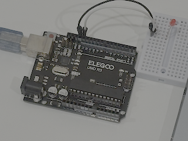
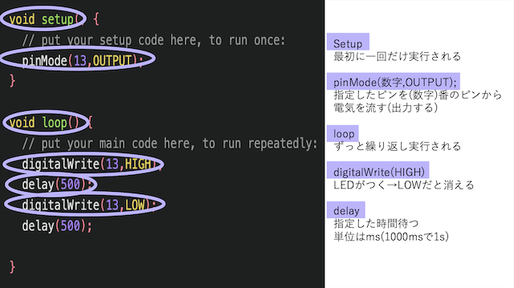
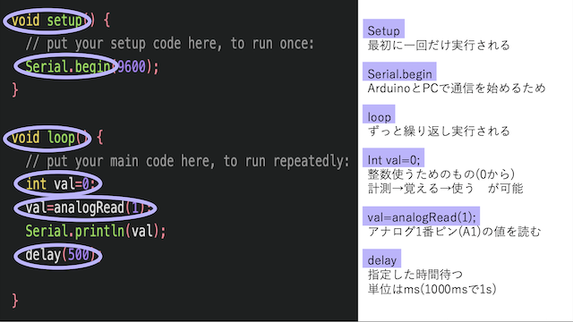
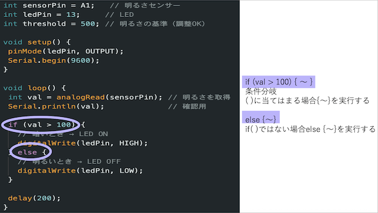

何に使われてる？
センサーやLEDなどをつなげられる「小さなコンピュータみたいな基板」です。
自分でプログラムを書くことで、
・センサーの情報を読み取ったり
・モーターを動かしたり
・LEDを光らせたり
といったことが簡単にできて、企業のプロトタイプや電子工作に使われます。
実際の写真

センサーやLEDなどをつなげられる「小さなコンピュータみたいな基板」です。
自分でプログラムを書くことで、
・センサーの情報を読み取ったり
・モーターを動かしたり
・LEDを光らせたり
といったことが簡単にできて、企業のプロトタイプや電子工作に使われます。



